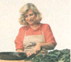
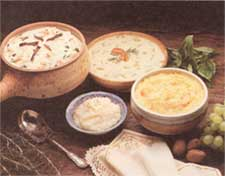

True Grits
By Carol Taylor
January/February 1988
A new Southern cook looks at an old Southern food.
OK, you've moved to the Sun Belt (or you've been overcome by Southern Chic), and you're beginning to know your way around. You've figured out that the word you is singular (as in, "You come see me, darlin'," but leave that rotten family at home); that yawl is plural ("Yawl stop by on Sunday," I guess I can put up with six kids for one afternoon); and that you-all is a reprehensible Yankee invention. You've got yourself a pickup truck and a redbone hound and a billed cap with "Massey Ferguson" on the front.
But, friend, can you eat grits? And like 'em?
From cradle to grave, die-hard Southerners breakfast on grits - ground corn cooked to a mush. A plate of fried eggs and bacon and sliced tomatoes and biscuits and grits, with bacon-drippings gravy ladled over everything including the tomatoes, will get just about anybody through the morning. In many homes, grits are served at every meal - as a side dish with fried fish for dinner (the midday meal), in a casserole with cheese at night for supper.
So if you sit there eyeing a bowl of grits from the same respectful distance you would accord a copperhead, people are going to know you're not from around these parts. You need help. You need someone to guide you through the highlands and lowlands of Southern cooking. Someone who's a nationally recognized authority on the subject, with two books and two television series to her credit. Someone who cooks grits. Someone like Nathalie Dupree.
Dupree believes that Southern food represents the finest and most distinctive regional cooking in America, and she wants to share it with the rest of the country. So in her writings, lectures and casual conversation, she shows strangers around. She translates the vocabulary: " 'Sweet milk' is what the rest of the world calls milk -that is, not buttermilk." She describes the mores: "Without 'Co-cola' a lot of us wouldn't know what to have for breakfast." She recounts the traditions: "It is unthinkable to serve greens without cornbread." She spells out the etiquette: "Always name a recipe for the person who gave it to you - Mary Lou Davenport's Peach Cobbler - no matter how long you've been making it, because the whole extended family knows she made it before you did." She warns of occasional hazards: "In small towns, barbecues frequently have an array of country meats-baby goat, possum and squirrel." And she explains the lasting allure of Southern fare: "Down-home cooking gives us a feeling of security when the rains don't come and the mill closes, today as much as yesterday."
One recent afternoon, as she drove past the endless, level fields of southern Alabama on her way to interview a mill owner for a television spot on grits, she talked about Southern food, and about how it came to be the focus of her professional life.
The Making of a Cook
It certainly isn't Nathalie Dupree's fault that she was born in New Jersey. Her father was career army; that's where his country wanted him at the time; that's where he wanted his wife. (Southerners have had trouble with the United States Army before.) By the time she was four, the family got back to Virginia, and she settled into the life of a fullfledged Southerner. By the time she was 20, she was a fledgling cook.
When the chef in her college dormitory suddenly became ill, Dupree volunteered to prepare dinner, using the most venerable of old standards: Tuna Casserole. What could go wrong? "A lot," she recalls. "When I increased the recipe to feed 20 people, I multiplied everything by five - the fat, the milk, everything - not knowing that ingredients in a recipe don't necessarily increase by the same factor. The casserole came out of the oven in layers: a layer of fat on top, then a layer of milk, one of flour (I guess that was the cream sauce) and a sludge of tuna on the bottom. In a panic, I added some seasonings and some more milk, stirred everything up, served it over toast, proclaimed it Tuna à la King, and prayed that nobody would actually die. Instead, everyone raved about it! And I thought, girl, you're onto something. I cooked for 20 people every night that summer and loved every minute of it." Come fall, she returned home and announced she had found her life's work.
Her mother was aghast. A lady did not cook in other people's kitchens, certainly not in sweaty commercial kitchens, at night, with men. Besides, scoffed her friends, she'd never be able to lift those huge pans. Faced with total opposition, she gave in.
So she drifted from one unsatisfying job to another. She also married, and when her husband was transferred to London 10 years later, she wandered into the world-famous Cordon Bleu cooking school for a single lesson. It was love at first whisk. She stayed for the full one-year course and received the Advanced Certificate in 1971.
"After that, I decided it didn't matter about being a lady," she says. "And as it turned out, it didn't matter, because Julia Child came along, God bless her, and paved the road for women in professional cooking."
Dupree has traveled that highway ever since, in a straight line and at high speed. Back home in the South - this time, rural Georgia - she turned an abandoned machineshop warehouse into a gourmet restaurant, with the help of her strong-backed husband and brother. They tore down old houses for antique planking, carried railroad ties in the hot Georgia sun and, on $1,000 and a $50 stove, opened "Nathalie's" right across from the tri-county cattle auction barn. And residents of Atlanta discovered that they were willing to drive an hour into the country to eat Dupree's cooking.
Equally successful was the cooking school she started at Rich's Department Store, an Atlanta landmark since 1867, and ran for nine years. Her cookbook Cooking of the South won a Tastemaker Award. In 1986 White Lily Foods talked her into creating and hosting a 26-part series for public television called "New Southern Cooking," along with a cookbook of the same title. A second series will be ready for airing next fall.
Working on the television programs has involved traveling to all parts of the South and meeting lots of good Southern cooks. At every stop, Dupree collects recipes handed down by word of mouth from generation to generation, before any more of the treasured old dishes are lost. But she also wants to update the cuisine a bit, to bring it into the 1980s. Determined to preserve the old, she also wants to develop the new.
Southern Fried
The hallmarks of traditional Southern cooking are generous amounts of fat, for frying, seasoning, and making gravy; an abundant variety of vegetables, especially beans and field peas, cooked for hours with a piece of fatback; biscuits and cornbread; sweet milk and buttermilk; and chicken and pork, almost to the exclusion of beef.
Southern food, Dupree theorizes, is largely the product of Southern history. A disastrous Civil War, a Great Depression that was particularly tenacious in this industry-shy region, and devastating agricultural practices impoverished the South for generations. So people fried their food because lard was cheap, cheaper than heating up the oven, and put flesh on their bones for the winter. Vegetables could be grown from a few cents' worth of seed, and if there were heaping bowls of five different kinds on the dinner table, nobody might notice that the only meat was the fatback in the collards. When combined with rice, both beans and field peas provided a cheap source of protein, and greens - turnip, mustard and collard, those archetypal Southern vegetables - thrived in damaged soil. Unlike cattle, which required pasture and grain, pigs and chickens could forage for themselves and recycle the kitchen scraps. Even the Southern custom of serving "family style" - bringing everything to the table at once in large bowls - was, Dupree suggests, "a poor people's way to avoid looking stingy."
Of course, there were other influences. A long growing season made fresh vegetables available for much of the year. Since access to grocery stores was limited in this predominantly rural area, pantries were always stocked with home-canned, dried and salted foods (hence country ham) and the preserves, conserves, relishes, chow-chows and pepper sauces to flavor them.
Other cultures added their flavors: British, French, Moravian, Spanish and, most important, African. When Africans were enslaved and brought to America, they carried with them some of their native foods: okra, peanuts and field peas, for example. Since a stifling Southern kitchen was a likely place for a slave (and later a black servant) to end up, blacks cooked both for themselves and for many whites. Thus, some historians argue that the institution of slavery was the primary determinant of Southern cooking, and indeed contemporary African cuisine has some remarkably familiar elements: deep-fried vegetables, incendiary pepper sauces, reliance on chicken and pork, and the ever-present greens, especially collards.
As the culture influenced traditional Southern food, so contemporary demands for lighter fare have had their impact on "new" Southern cooking. It has much in common with the old-particularly in the use of indigenous Southern ingredients. But under Dupree's hand, down-home food often becomes less caloric, less dependent on animal fat.
"What you do," she explains, "is take all the wonderful foods of the region - including some we haven't noticed before, like shiitake mushrooms, which are now grown here - and break the stereotypes about how they must be cooked. For example, instead of rolling sliced okra in cornmeal and frying it, you can blanch it for two minutes, sauté up some shiitakes in a little butter, and serve them together." Her changes aren't major, Dupree insists: "Southerners have been blanching vegetables for generations, in the process of preserving them. We can update Southern food by blanching it for the table, as well. That doesn't mean we abandon traditional cooking, just that we don't eat it all the time. We combine the old and the new."
Dupree has achieved some arresting combinations: Turnip Green Pasta, Stir-Fried Collards, Hopping John Vinaigrette, Sweet Potato and Bourbon Soup, Greens With Coriander Seed and Browned Butter, Rainbow Trout With Pecans. And then there's Grits With Rosemary and Grapes.
Grits for the Mill
Last year Americans bought 109 million pounds of grits. Almost exclusively a Southern staple, they sold best in New Orleans, worst in Green Bay, Wisconsin.
Making grits is relatively simple. After the corn (usually white) is shelled from the cob and dried, the lower third of the kernel is removed, taking with it the germ, which is full of oil; the bran; and the corn tip, a black speck at the bottom. (As Don Coles of Martha White Foods points out, "If that tip gets ground up in your packages of grits, it looks an awful lot like bugs.") What is left-almost pure starch-is ground to a gritty consistency somewhat coarser than cornmeal.
Cooking grits is even easier. When dry grits are simmered in a liquid (usually water) for anywhere from one to 20 minutes-depending on whether they're instant, "quick" or regular-they turn to a mush.
Eating them is like falling off a log. If you want to go native, serve them hot from the pan with salt, pepper and a pat of butter melting on top. They're especially good with strong-flavored or greasy foods (fried catfish, for example), which balance their mild, corny taste. An egg fried over-easy is perfect; just break the yolk and mush it up with the grits. No lucid Southerner eats grits with milk and sugar-ever. That is a desperate strategem of visiting Yankees.
You can, of course, incorporate grits into more complicated dishes. At church suppers from Mississippi to Tennessee, grits casseroles are standard fare.
As you might expect, Dupree can supply the recipes. Grits and Cheese Casserole, from Cooking of the South (Irena Chalmers, 1982), is a traditional dish. Two others, from New Southern Cooking (Alfred A. Knopf, 1986), add such new-fangled ingredients as Boursin cheese and sun-dried tomatoes.
Old or new, all three dishes are way down home. They use Southern products. They're good eating. Ain't nobody ("Yawl eat up now") gonna go home hungry. And if you can cook them, and especially if you can eat them - cousin, you belong.
Grits and Cheese Casserole
6 cups water1 1/2 cups grits3 eggs2 teaspoons salt1-2 cloves garlic, crushed1 teaspoon paprikaDash Tabasco1 pound sharp cheese, grated1 stick butter
Preheat oven to 350°F. Butter a 2-quart casserole. Bring water to boil in large saucepan; then stir in grits, stirring constantly until completely mixed. Cook, stirring, until thickened. Mix eggs slightly and add a small amount of grits, stirring constantly to prevent overcooking of the eggs, and add to grits. Add seasonings, cheese and butter, mixing well. Pour grits mixture into buttered casserole. Bake for 45 minutes. Serves 6.
Grits and Turkey Casserole
1 cup quick grits, cooked in 4 cups turkey or chicken stock2 cups cooked turkey or chicken, cut into small pieces1 cup garlic-herb cheese (such as Boursin),Montrachet or soft goat cheese1/3 cup sliced sun-dried tomatoes2 tablespoons chopped fresh basil1 cup cooked chopped or sliced collards or turnip greens
Preheat oven to 350°F. Cook grits according to package directions, substituting turkey or chicken stock for the water. In a casserole, mix grits with remaining ingredients and bake until heated through, about 20 minutes. Serves 4.
Grits With Rosemary and Grapes
5 cups turkey or chicken stock, boiling1 cup grits1-2 tablespoons rosemary, chopped or whole1 cup grapes, preferably scuppernongs or muscadines, halved and seeded1 tablespoon butterSaltFreshly ground black pepper1 cup pecan halves, toasted
Bring stock to boil and add grits, rosemary and grapes. Cook 30 minutes, until thick and cooked. Add butter and taste for salt and pepper. Add pecans and serve. Serves 4.
Food editor Carol Taylor was born and raised in Tennessee, and has never fully recovered. Related Article: Southern Alabama
 Chef, author and host of two series for public television, Nathalie Dupree specializes in Southern cooking. "It has its foundation," she says "in the country kitchen." |
 "Becoming a professional cook is the only thing my mother ever begged me not to do." |
At church, suppers from Mississippi to Tennessee, grits caseroles - both old style and new - are standard fare. |
|
 |
|
|